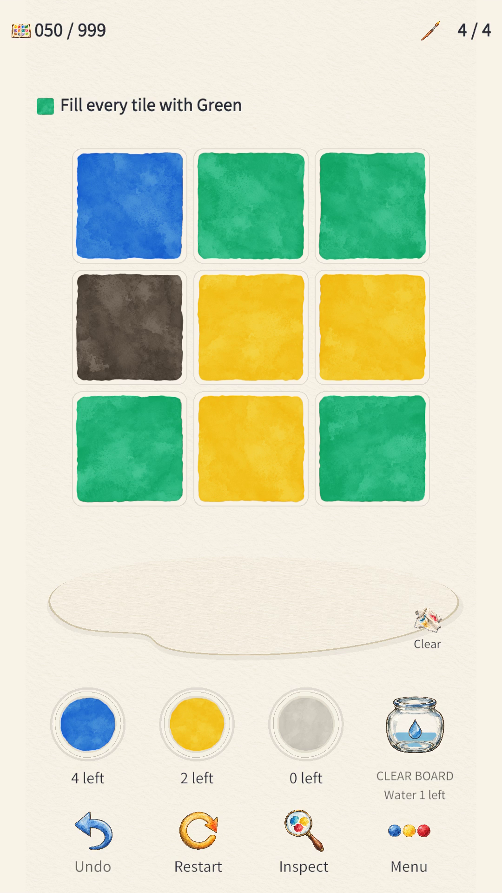
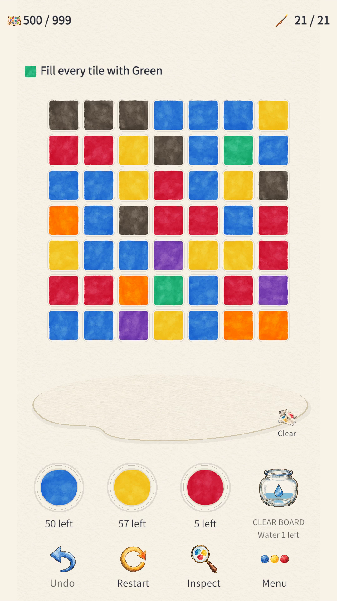
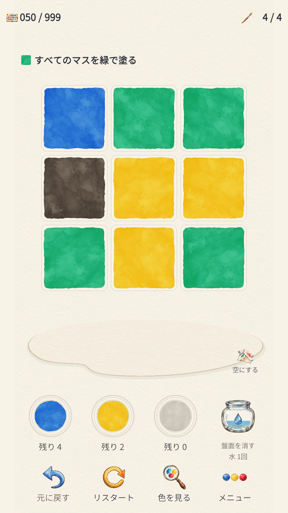
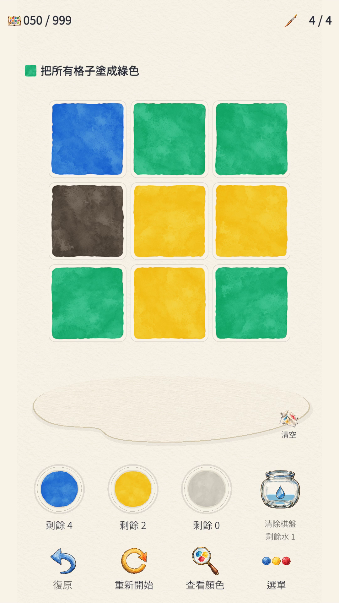
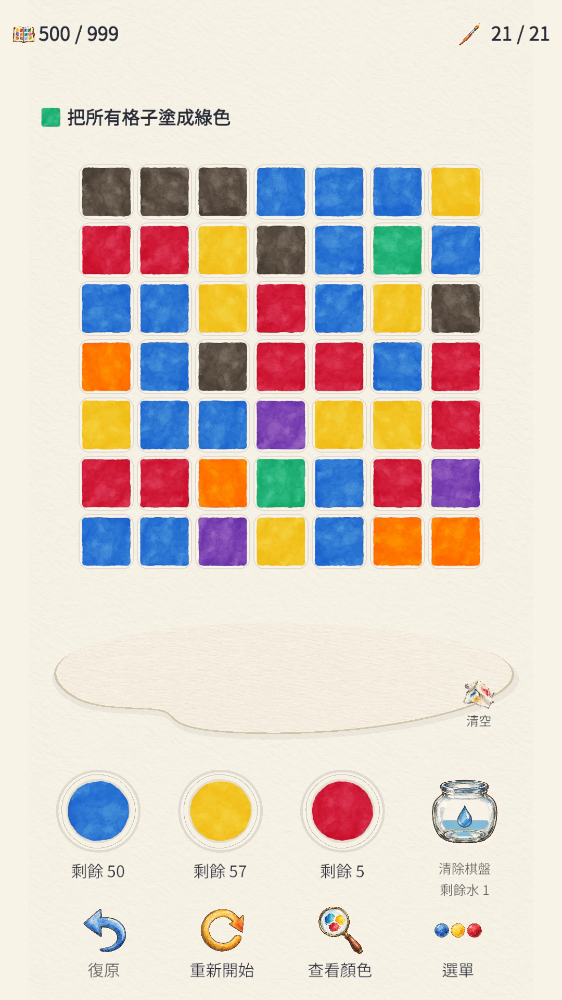

심사 중IN REVIEW審査中审核中審核中 WATERCOLOR · COLOR PUZZLE
Palette of Water
색을 섞고, 한 수를 생각하는 작은 스케치북A little sketchbook of color and possibility色を混ぜ、次の一手を考える小さなスケッチブック混合色彩，思考下一笔的小小画册混合色彩，思考下一筆的小小畫冊
물감을 섞고 연결된 칸을 칠하는 수채화 퍼즐. 브라우저에서 1–30 스테이지 튜토리얼 데모를 무료로 즐겨보세요. 본편은 999 스테이지이며, 이미지는 본편 50·500 스테이지입니다.Mix paint and recolor connected tiles. Play the free stages 1–30 tutorial demo in your browser. The full game has 999 stages; images show full-game stages 50 and 500.絵の具を混ぜ、つながったマスを塗る水彩パズル。ステージ1–30のチュートリアルデモをブラウザで無料体験。本編は全999ステージ。画像は本編の50・500です。混合颜料，为相连的方格上色。在浏览器中免费体验第1–30关教学试玩。完整版有999关；图片展示完整版第50和500关。混合顏料，為相連的方格上色。在瀏覽器中免費體驗第1–30關教學試玩。完整版有999關；圖片展示完整版第50和500關。
30 스테이지 무료 웹 데모Play the free 30-stage demo30ステージを無料でプレイ免费试玩30关免費試玩30關 →게임 살펴보기Explore the gameゲームを見る了解游戏了解遊戲
Google Play 심사 중 · 출시 후 다운로드 안내 예정Under Google Play review · Download details after releaseGoogle Play審査中 · 公開後にダウンロードをご案内Google Play审核中 · 发布后提供下载信息Google Play審核中 · 發佈後提供下載資訊